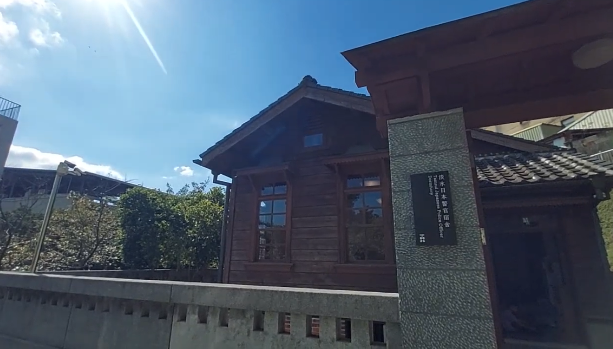
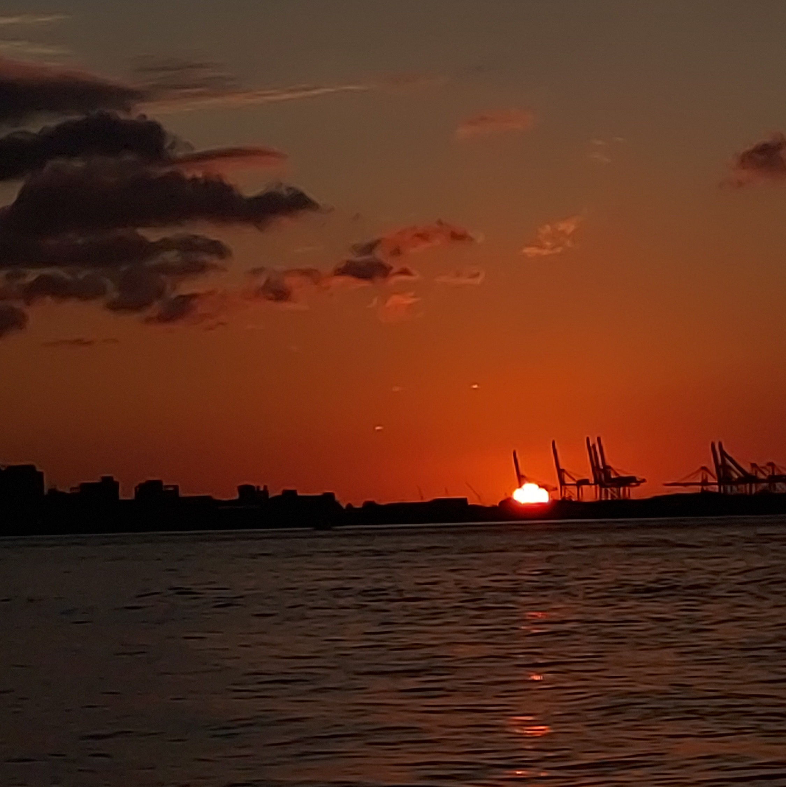

老街吃喝路線
從捷運淡水站出發，沿著中正路走進老街。建議先吃阿給暖胃，再邊逛邊嘗魚酥與鐵蛋，最後以一杯手搖飲收尾。平日下午人較少，拍照也更從容。

四個必訪地點，半天到一天走完。

從捷運淡水站出發，沿著中正路走進老街。建議先吃阿給暖胃，再邊逛邊嘗魚酥與鐵蛋，最後以一杯手搖飲收尾。平日下午人較少，拍照也更從容。

逛完紅毛城後走到河岸，找一個長椅坐下。夕陽落入觀音山的前後半小時，是一天中光線最美的時段，也是整趟旅程最值得留下的畫面。